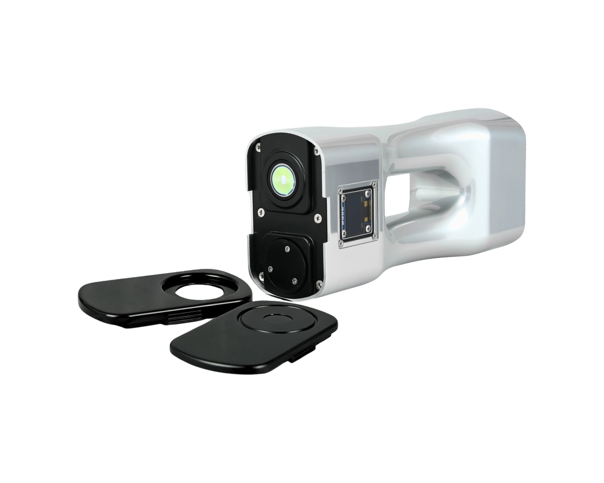

手持式 NIR 光谱仪
USTECH TrueLine 17EC
908–1676 nm 光学范围
蓝牙连接
>40,000 小时灯泡寿命
ProChem Mobile 应用
1.4 kg 手持式设计
TrueLine 17EC 将快速、可靠的近红外分析直接带到现场。配合 ProChem Mobile 应用和云端门户，用户可以现场测量、自动传输结果，并在互联的数字环境中访问分析数据。手持式设计无需将每个样品送往实验室，帮助在任何需要测量的地方更快地做出质量决策。
应用与价值
跨行业的多功能分析
将快速、可靠的近红外分析直接带到需要的地方。
-
饲料和动物营养 从原料到成品饲料的快速质量控制。可在现场分析饲料原料和成品，配合针对具体应用的定标模型，在生产、储存和原料接收各环节可靠测定关键质量参数。
-
塑料与聚合物 快速的材料识别与质量评估。近红外光谱信息可在现场快速表征和分类聚合物及塑料材料，支持原料核验、回收、材料分选和日常质量控制等应用。
-
纺织 现场对纺织材料进行近红外分析，并根据具体材料和分析要求开发专用的定标和分类模型。
-
化工与工业材料 适用于多种材料和工艺的灵活分析。从进厂原料到成品，TrueLine 17EC 可为广泛的化工和工业应用提供快速光谱分析。
工程细节
专为现场使用而设计
TrueLine 17EC 专为现场使用而设计，可直接在取样点快速测量。
光谱范围
覆盖 908–1676 nm 近红外范围，灯寿命超过 40,000 小时。
手持式设计
重 1.4 kg，尺寸 22 × 6.6 × 9.5 cm，工作温度 −20 至 45 °C，可在样品所在位置直接测量。
ProChem Mobile 集成
测量通过专用的 ProChem Mobile 应用进行，应用经蓝牙与分析仪连接。
云端门户
测量结果和光谱数据可自动传输到门户，便于集中访问和进一步管理。
为什么 TrueLine 17EC
核心价值驱动因素
TrueLine 17EC 将近红外分析从实验室带到做出质量决策的现场。
- ✓ 快速现场分析： 随时随地获得结果，无需将每个样品送往实验室。
- ✓ 移动应用集成： 通过移动设备完成测量和管理，流程简单便捷。
- ✓ 即用型定标： 针对具体应用的高精度定标模型，可帮助您从光谱测量快速得到有意义的分析结果。
- ✓ 无化学试剂分析： 无需有毒试剂或昂贵耗材，样品可直接测量。
技术数据
技术规格
- 波长范围 908–1676 nm
- 工作温度 -20°C 至 +45°C
- 灯寿命 >40,000 小时
- 通信 Bluetooth
- 软件 ProChem Mobile
- 数据传输 自动传输至云端门户
- 定标模型 针对应用的专用模型
- 尺寸 22 × 6.6 × 9.5 cm（高 × 宽 × 长）
- 重量 1.4 kg
- 保修单 1 年